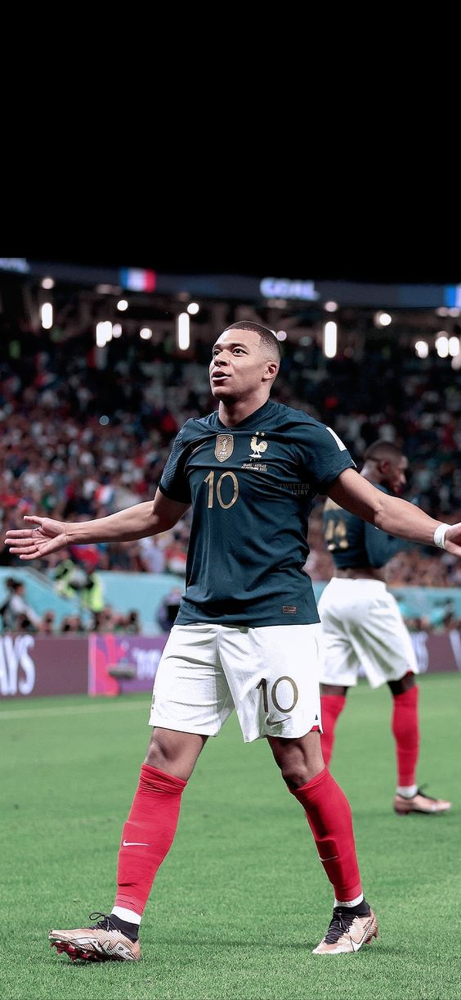
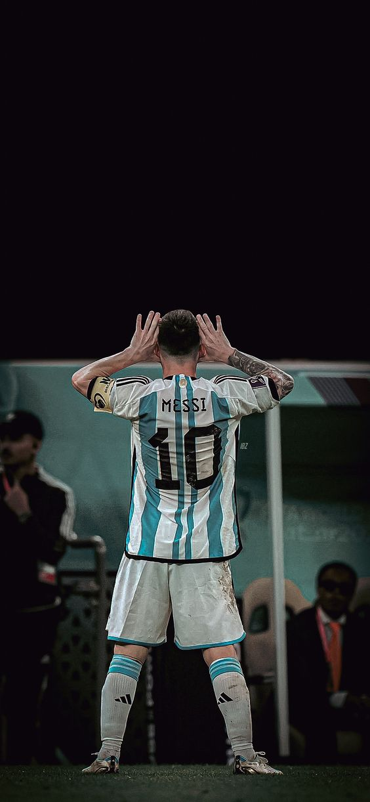
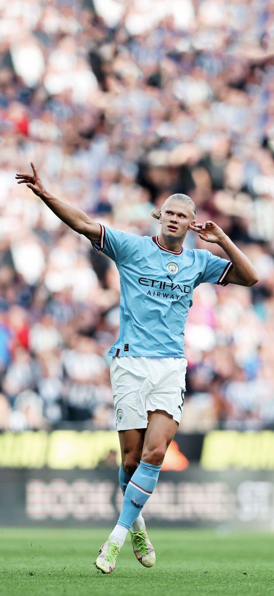

Kylian Mbappé
Kylian Mbappé is a French professional football player who currently plays as a forward for Paris Saint-Germain and the French national team. He is widely regarded as one of the best young talents in world football, known for his incredible pace, skill, and finishing ability. Mbappé has already achieved numerous individual awards and accolades, including the Best Young Player Award at the 2018 FIFA World Cup, and has helped lead PSG to multiple domestic titles. He is considered one of the brightest prospects in football and has already established himself as a superstar in the sport.
Lionel Messi
Lionel Messi is an Argentine professional football player who currently plays as a forward for Paris Saint-Germain and the Argentine national team. Widely regarded as one of the greatest football players of all time, Messi is known for his exceptional dribbling skills, agility, and vision on the pitch, as well as his incredible goal-scoring record. He has won numerous individual awards and accolades, including a record seven Ballon d'Or awards, and has led his club team FC Barcelona to numerous domestic and international titles. Messi is considered a living legend in football and has inspired countless young players around the world.
Cristiano Ronaldo

Cristiano Ronaldo, commonly known as CR7, is a Portuguese professional football player who currently plays as a forward for Al Nassr and the Portuguese national team. Widely regarded as one of the greatest football players of all time, Ronaldo is known for his incredible athleticism, speed, and goal-scoring ability, particularly his powerful and accurate free kicks. He has won numerous individual awards and accolades, including five Ballon d'Or awards, and has led his club teams, including Manchester United, Real Madrid, and Juventus, to multiple domestic and international titles. Ronaldo is considered one of the most successful and influential football players of his generation and has a massive following around the world.
Erling Haaland
Erling Haaland is a Norwegian professional football player who currently plays as a forward for Manchester City and the Norwegian national team. Widely regarded as one of the most promising young talents in football, Haaland is known for his physical strength, incredible speed, and impressive goal-scoring record, having scored more than 40 goals in the 2020-2021 season. He has already won numerous individual awards and accolades, including the Golden Boy award in 2020, and has been linked with a move to some of the biggest clubs in Europe due to his potential and impressive performances. Haaland is considered one of the most exciting prospects in football and has already established himself as one of the best young players in the world..